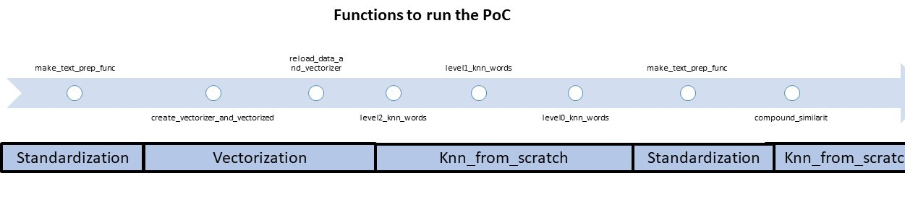
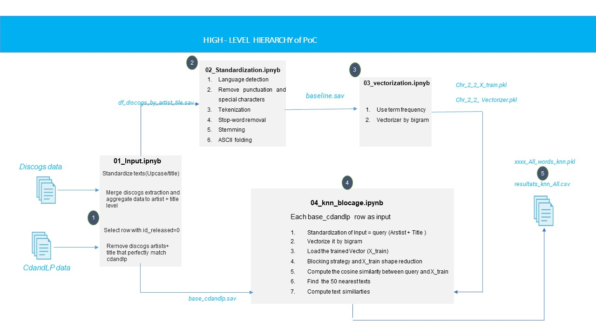
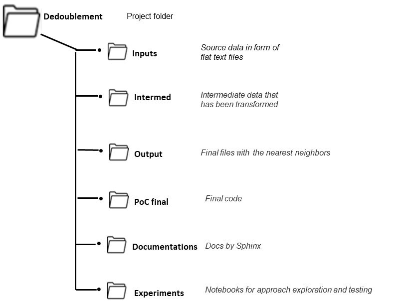
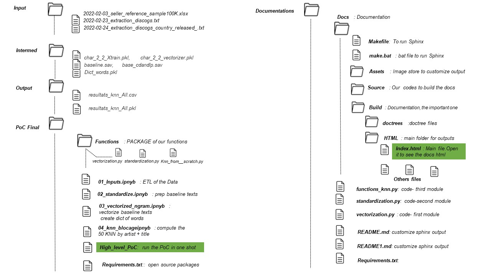

Sphinx Documentation README

Link to documentation on Read the Docs can be found here
Welcome to the functions documentation!¶
There are 3 mains types of functions
- Text Standardization
Documentation for data standardization and processing.
- Text’s vectorization
Documentation for vectorization : Convert a collection of raw documents to a matrix.
- KNN from scratch functions
Documentation for knn_from_scratch /customized outputs.
Welcome to Code Hierararchy
This is the PoC lifecycle diagram .

This is the folder hierarchy .
 | 